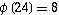

Problem A
Another New Function
Input: Standard Input
Output: Standard Output
Time Limit: 4 Second
The depth of phi value of a number is denoted by the number of steps
required before it reaches 1. An example will make it very clear.
Φ(13)=12 ......
step 1
Φ(12)=4 ......
step 2
Φ(4)=2 ......
step 3
Φ(2)=1 ......
step 4
So the depth of phi(13) is 4. We name this function as depthphi. So we can write depthphi(13)=4. The sum of depthphi function (SODF) takes two integers as parameter and its definition is given below:
Given the value of m and n your job is to find the value of SODF(m,n).
The first line of the input file contains an integer N (0<N<2001) which indicates how many sets of inputs are there. Each of the next N lines contains two integers m and n (2 ≤ m ≤ n ≤ 2000000).
For each line of input produce one line of output. This line contains an integer S, which actually denotes the value of SODF(m,n).
22 10100000 200000 |
22 1495105 |
Problem
setter: Shahriar Manzoor, EPS
Special
Thanks: Derek Kisman, EPS
The following paragraph is extracted from Mathworld to inform you about phi function.
The totient function or phi(n), also called Euler's totient function, is defined as the number of positive integers that
are relatively
prime to (i.e., do not contain any factor in common with) ,
where 1 is counted as being relatively prime
to all numbers. Since a number less than or equal to and relatively prime
to a given number is called a totative,
the totient function can
be simply defined as the number of totatives
of .
For example, there are eight totatives
of 24 (1, 5, 7, 11, 13, 17, 19, and 23), so .
The totient function is implemented in Mathematica
as EulerPhi[n].